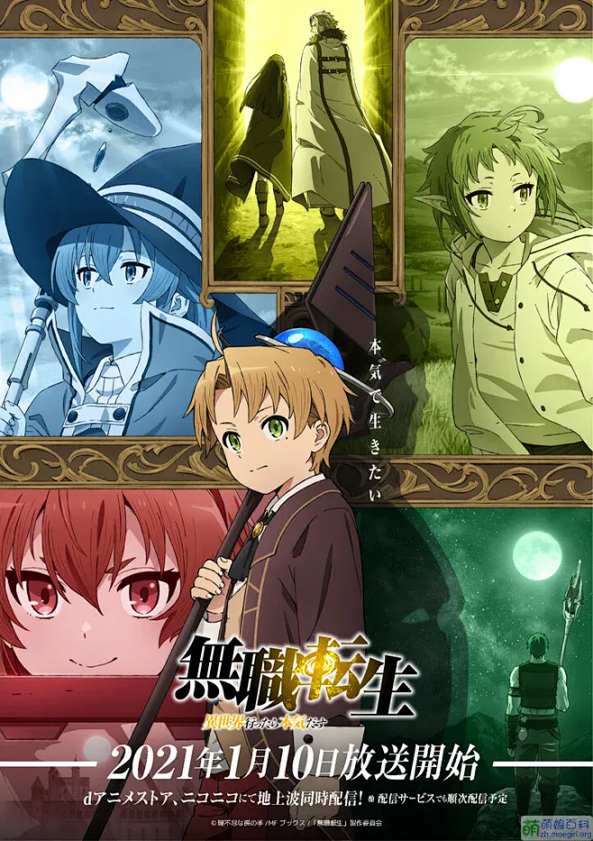
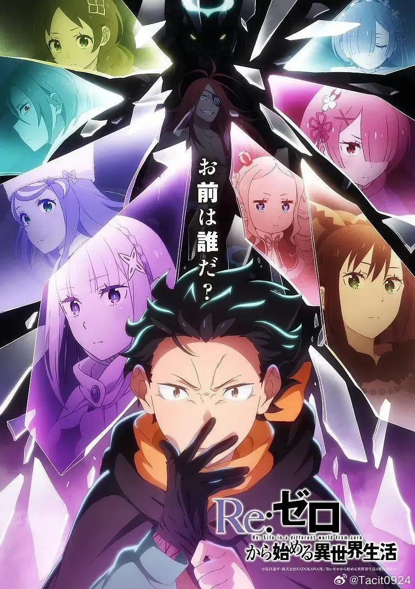
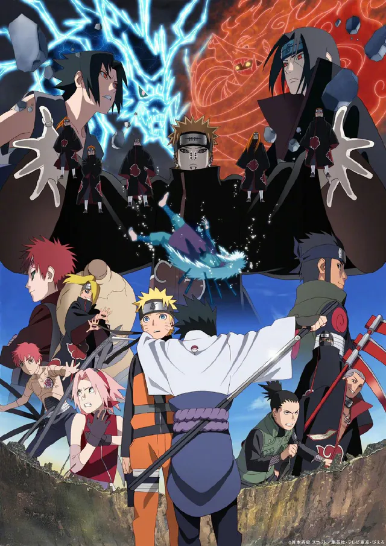
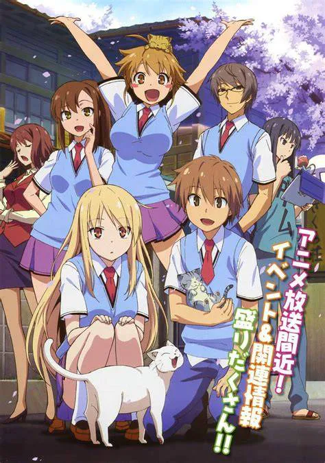
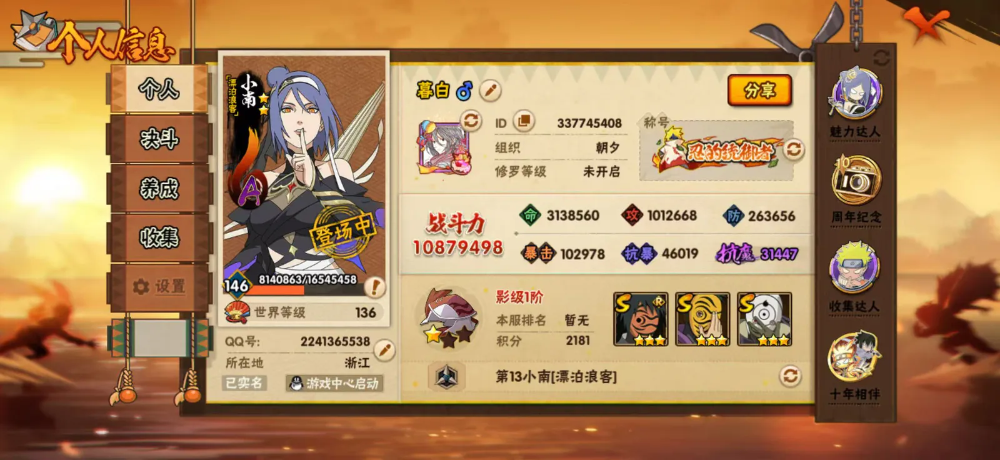
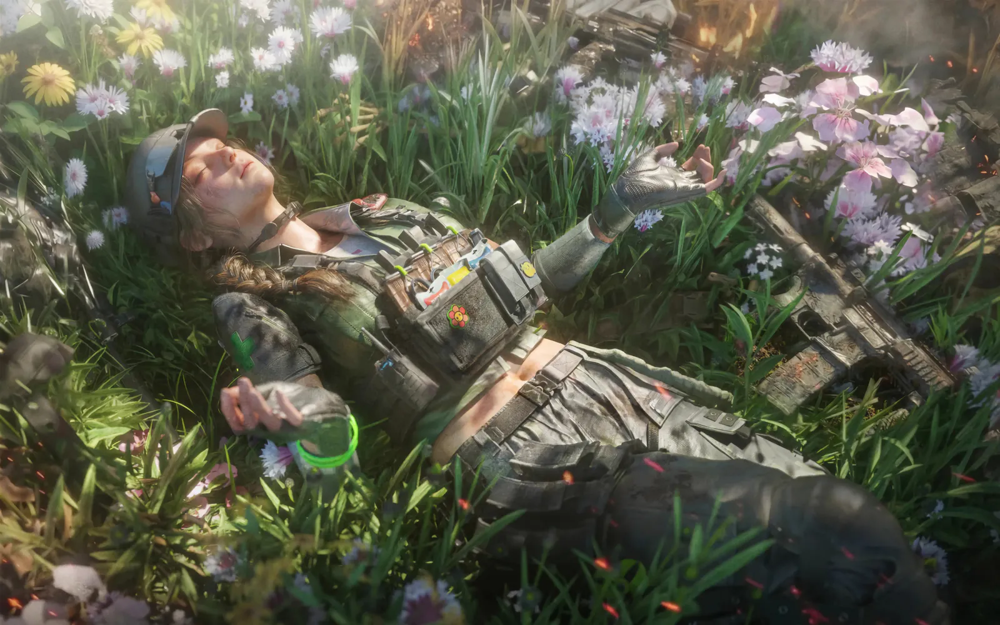
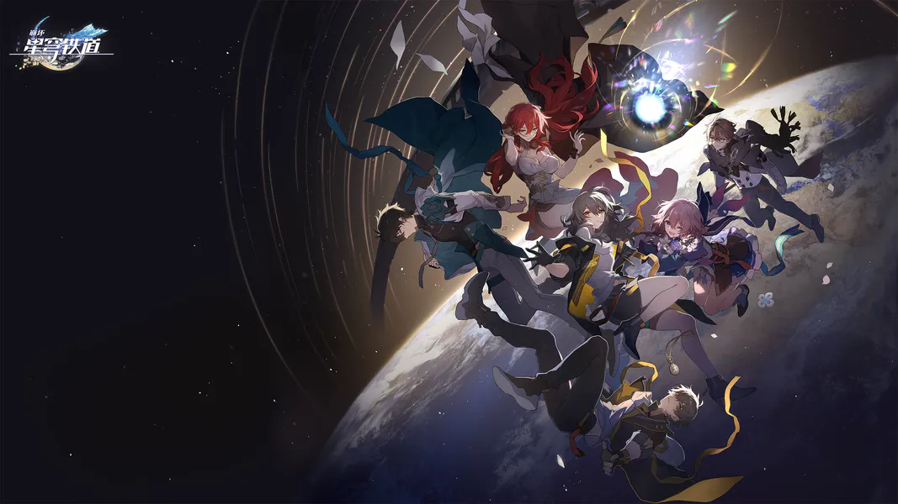
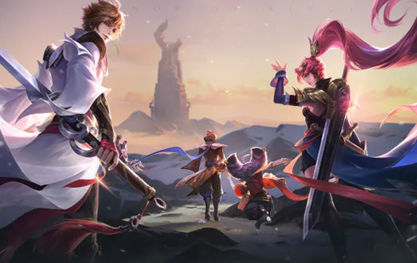

爱好 · 03
🎮 动漫 / 游戏
火影老粉,也爱在游戏里放松和找灵感。
动漫
追番是我学习之余最主要的放松方式,好的故事总能给人力量。




- 火影忍者十年老粉,热血与羁绊永远看不腻。
- 喜欢研究番剧的叙事节奏和分镜,也给视频创作带来灵感。
- 新番老番都看,片单一直在更新。
游戏
游戏里既能放松,也能找到做产品和技术的一些灵感。




- 剧情向:喜欢沉浸式的故事体验。
- 竞技向:和朋友开黑,重在参与和放松。
- 偶尔会想:如果这个游戏是我做的,会怎么设计?